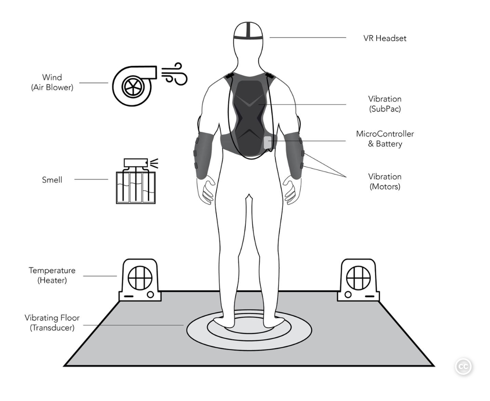

© Yeonhee Choi, 2025. All rights reserved.
-->
© Yeonhee Choi, 2025. All rights reserved.
Personal Introduction & Project Overview
Yeonhee Choi

About
Yeonhee Choi is a designer, researcher, and developer of Wish You Were Here XR project which is deeply rooted in her firsthand experiences during the COVID-19 pandemic in London, where she was suffering from intersectional vulnerability of (C)PTSD and ASD. It was painful as a person, but as a desinger and researcher, it was an opportunity to discover the critical gaps in healthcare system and gain insights into reimagine it through this personal longitudinal research journey, closely intertwined with her own recovery process.
Skillset
Trauma-Informed Design, Neurodiversity-inforned Design, Participatory Design Research, Qualitative and Quantitative Research, Unity Development (C#), Tangible Interaction Design, Graphic Design, Digital Fabrication, Project Management, longitudinal study, Physical Computing
Project Concept
Wish You Were Here XR is an accessible and affordable XR emergency aid for individuals with intersecting vulnerabilities of (C)PTSD and ASD, developed to address critical gaps in the NHS healthcare system and current XR digital therapeutics (DTx).
People with ASD are at higher risk of developing (C)PTSD, and individuals with (C)PTSD and ASD experience invisible emergencies on a daily basis due to trauma triggers and sensory overload. This can be painful, affecting their ability to function in daily tasks, leading to isolation and poverty.
In this regard, these vulnerable populations may lack the resources and technical skills to access expensive and complex conventional XR digital therapeutics (DTx). The NHS healthcare service is free of charge; however, often involves long waiting times and frequently fails to provide the most effective care for these individuals at the right time.
This tool is designed to be used in such invisible emergency situations, within the golden hour, helping them continue their daily lives with less pain and difficulties, and reach their fullest potential.
Core Innovation: This XR experience provides immediate contact comfort through tactile interaction, triggering mirror neuron effects via augmented 2D facial expressions as positive non-verbal feedback.
Background & Research Foundation
Project Timeline & Evolution
2017 Brooklyn, NY: A seed of idea from Tree VR
Out of vast curiosity, I tried almost all VR experiences at BAM 8 years ago. Sadly, most of them were uncomfortable for me. I ended up feeling that VR technology was still in its early stages and had limitations; however, when I tried Tree VR from MIT Media Lab, I fully immersed myself for the first time in a unique VR experience, realizing the power and potential of it.
It was a VR experience in which you become a tree, staying still, growing from a tiny seed to a massively tall one. The team let me know that they actually provided some multi-sensory, physical, tactile stimuli synced with the VR. This inspiring experience of Digital-Physical Hybridity influenced my work.

2019 - 2021 London: Early concept design of Wish You Were Here VR
Early Concept of Wish You Were Here VR developed for Prof. Sylvia's VR module coursework: 8-minute virtual dog and hand interaction experience synced with physical machine dog on the user's lap.
In early concept design, You Will Know Me was an 8-minute long VR experience where a user could interact with a 3D virtual Dog. While seeing the virtual dog through VR headset, the user can touch the physical dog machine, covered by soft plush, placed on on their lap, which is synced with the VR.
In this VR experience, the 8 minutes represent the entire life of a dog. You encounter a puppy that approaches you, and you must learn how to build trust with her. As you successfully interact with the dog, she will grow, move closer to you, and eventually land on your lap. At this point, you can physically touch the plush dog, which is synced with the VR experience.
However, due to the shorter lifespan of dogs compared to humans, she will eventually have to leave you, just as we must eventually say goodbye to our furry companion. This VR experience was designed to evoke deep and diverse emotions, similar to the feelings we often experience when interacting with a dog.
During this period, as I experienced a crime and other incidents, my health started to deteriorate. Even though I strongly pursued continuing my studies, the sudden outbreak of the COVID-19 pandemic further worsened my condition due to its implications and lockdowns. Eventually, I had to interrupt my studies and return to Seoul to fully focus on my recovery.
2022 - 2024 Seoul: Longitudinal research(self-tracking) and literature review
While receiving support from PTSD experts, I began a personal longitudinal research journey, closely intertwined with my own recovery process. I documented my recovery over time, observing patterns and responses to different interventions.
One day, while volunteering at a shelter for abandoned dogs, I met Niel, a cocker spaniel. Interacting with her joyful non-verbal feedback in response to my gentle touch had a profound effect on me. It positively contributed to my recovery and reminded me of an early concept I had developed during Sylvia’s module. This experience became the foundation for the idea I continue to develop today.
I explored relevant literature, reviewing research in trauma-informed design, somatic therapy, contact Comfort, deep touch pressure, and neurodivergent sensory processing to better understand the mechanisms behind my response. These findings validated my personal experiences and helped transform them into a structured, evidence-based design approach.
2025 Seoul(Remote Study): Development and User Test(n=1)
I finally returned to my studies and resumed the project with a new cycle of design iteration, prototyping, AR graphic design, Unity development, and the optimization of hardware components—including a DIY Google Cardboard headset, physical markers, a water bottle, and ear covers or earplugs.
Multiple user tests were conducted, including one during an actual emergency situation in which excessive external noise triggered both hypervigilance and sensory overload. I immediately launched the one-minute experience using the final prototype and experienced a noticeable sense of calm afterward. Despite being in a highly distressed state, the tool was intuitive and posed no usability issues.
Research Foundation
Benefits of Tactile Stimuli to Support Emotional Regulation Harry Harlow's Contact Comfort Studies (1958): Foundational research demonstrating that physical comfort and contact are fundamental to emotional regulation and stress reduction, informing the tactile component of this design.
Benefits of Tactile Stimuli for Emotional Regulation in Neurodivergent Individuals Temple Grandin's Deep Touch Pressure Research: Evidence that controlled pressure and tactile stimulation can significantly reduce anxiety and hypervigilance in neurodivergent individuals, directly influencing the heated water bottle interaction design.
Benefits of Augmented Face Expressions as Positive Non-Verbal Feedback through Mirror Neuron Activation Mirror neuron studies show that observing positive facial expressions (such as smiling) activates corresponding neural pathways in the observer, triggering automatic emotional mirroring and promoting feelings of safety and connection. This non-verbal positive feedback mechanism is particularly effective for trauma survivors who may struggle with verbal communication during crisis states, as it bypasses cognitive processing and directly influences the emotional regulation system through embodied empathy responses.